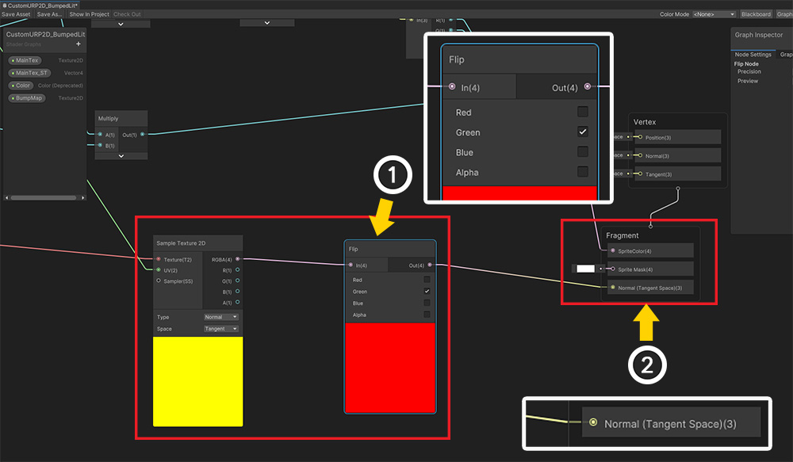

AnyPortrait > マニュアル > 「Shader Graph」でマテリアルを作成
「Shader Graph」でマテリアルを作成
1.2.2
「Shader Graph（シェーダグラフ）」は、ノードベースのツールを利用して、シェーダを作成する機能です。
Unity 2018で導入されたこの機能は、、LWRPとHDRPでも動作するので、互換性が良いという特徴があります。
「Shader Graph」を利用して、「カスタムシェーダ」をルールに合わせて作成するAnyPortraitとも互換性のあるマテリアルを作成することができます。
このページでは、「Shader Graph」を利用して、「カスタムシェーダ」を作成しマテリアルに適用する方法を説明します。
追加情報は次のページを参照してて見ることをお勧めします。
- カスタムシェーダー
- Shader Graph (Unity公式ページ/英語)
- マテリアルライブラリ
参考
このページで説明されたシェーダは、基本的なシェーダコードの内容をグラフ形式に変換したものです。
基本的なルールだけよると、皆さんが自由にシェーダを製作することができます。

「Shader Graphアセット」を作ってみましょう。
「Create> Shader > 2D Renderer」で二つの方式の「Shader Graphアセット」を作成することができます。
この例では、「Sprite Lit Graph（Experimental）」を利用してみましょう。
参考
この例では、LWRP 2Dと互換性のあるシェーダを作成しました。
他の種類のグラフを作成することも可能です。

生成された「Shader Graphアセット」をダブルクリックすると、「グラフツール」が開きます。
現在は、出力ノードである「Sprite Lit Master」ノードのみの状態です。
(1) 「+」ボタンを押します。

(2) プロパティのタイプを選択します。ここでまず、「Texture2D」を選択します。

(1) 新しいプロパティが追加されました。
(2) プロパティの名前を「MainTex」に設定します。プロパティの名前は、この例と異なる設定いただいてもかまいません。
(3) Referenceの名前を「_MainTex」に設定します。この値は、シェーダでのプロパティで動作するので、この例と同じように作成します。
(1) と同じ方法で、上記のように「Vector4」タイプのプロパティと「Color」タイプのプロパティを追加します。
(2) 第二のプロパティを次のように設定します。
- Reference : _MainTex_ST
- Type : Vector4
- Default : (1, 1, 0, 0)
(3) 第三のプロパティを次のように設定します。
- Reference : _Color
- Type : Color
- Default : (0.5, 0.5, 0.5, 1)

AnyPortraitのカスタムシェーダルールに合わせて、基本的なシェーダを作成しました。
（画像をクリックすると拡大してご覧いただけます。）

テクスチャをサンプリングして色を作成するノードです。
基本のUVを使用することもありますが、「MainTex ST」を使用すると、「UVのタイリング」などをさらに設定することができます。
「MainTex ST」の値が（1, 1, 0, 0）ではない場合、通常表示されないことがあります。

テクスチャの色と「_Color」プロパティの色を組み合わせているノードです。
AnyPortraitは色演算時に「2X Multiply」方式を使用します。
従ってこのグラフでも「_Color」のRGB値が2と乗算した後、「テクスチャの色」と乗算されます。

アルファチャンネルの値は、「テクスチャのアルファ値」と「_Colorのアルファ値」を乗算となります。
完成された色は、「Sprite Lit Master」の「Color」に接続されます。

これで、「Shader Graph」をAnyPortraitに適用してみましょう。
AnyPortraitエディタを開きます。
(1) 「Root Unit」を選択します。
(2) 「Material Library」ボタンを押します。
(3) 「Make Material Set」ボタンを押します。
(4) 新しいマテリアルセットはプリセットを使用しないので、「（None）」を選択します。
(5) 「Select」ボタンを押します。

(1) 生成されたマテリアルのセットを選択します。
(2) マテリアルセットの「Name」と「Icon」を設定し、「Default Material」ボタンを押して、デフォルトのマテリアルに設定します。

Shader Graphで作成されたシェーダを適用してみましょう。
(3) 「Color Space：Gamma > Basic Rendering > Alpha Blend」の項目に、作成したシェーダを割り当てます。
Bakeをした後、Unityシーンで確認してみましょう。
Shader Graphで作成されたマテリアルが適用されて表示されるのを見ることができます。
クリッピングメッシュのためのShader Graph作成
「クリッピングメッシュ（Clipped Mesh）」を描画するためには、二種類のシェーダが必要です。
- Clipped Shader
- Alpha Mask Shader
Shader Graphではシェーダを作成すると、クリッピングメッシュもレンダリングすることができます。
まず、「Clipped Shader」を作ってみましょう。

前に作成しシェーダーを複製します。

(1) クリッピング、レンダリングのための「Texture2D」タイプと「Vector4」タイプのプロパティを次のように追加します。
(2) 「マスクテクスチャ」の入力を受けるプロパティを次のように設定します。
- Reference : _MaskTex
- Type : Texture2D
(3) 「マスクテクスチャ」の「位置とサイズ」に関連するプロパティを次のように設定します。
- Reference : _MaskScreenSpaceOffset
- Type : Vector4
- Default : (0, 0, 0, 1)

上記の記述されたShader Graphを複製したので、基本的なレンダリングのためのグラフでは、完成された状態です。
ここでクリッピングに関連するノードを追加してみましょう。
次の3つのノードを追加します。
(1) MaskTex プロパティ
(2) Screen Position ノード（Defaultモード）
(3) MaskScreenSpaceOffset プロパティ

既存のグラフにクリッピングに関するノードを追加してShader Graphを完成しました。
グラフの下側のノードとアルファ関連の演算ノードが追加、変更されたものです。
（画像をクリックすると拡大してご覧いただけます。）
クリッピングに関するノードを見てみましょう。
「Screen Position」と「MaskScreenSpaceOffset」プロパティを使用して、「マスクテクスチャのためのUV」を計算する部分です。
これはかなり複雑に構成されているが、「AnyPortraitのクリッピングメッシュ処理の最適化」に関連しているからです。
この部分は修正せずに、同じように作成ください。

「マスクテクスチャ（MaskTex）」と「Screen PositionとMaskScreenSpaceOffsetを利用して作成されたUV」を利用して、アルファ値を変更するノードです。
このノードを追加すると、元の画像がマスクテクスチャによって透明になります。

クリッピングレンダリングのマスクテクスチャを生成する「Alpha Mask Shader」を作ってみましょう。
AnyPortraitは「Rチャンネル」をマスクデータとして使用します。
「Rチャンネル」の特性にマスク画像データは、光の影響を受けて色が変わることがあります。
したがって、光の影響を受けない「Sprite Unlit Graph」を選択して、新しいShader Graphを生成します。
生成された「Shader Graph」をダブルクリックして、グラフツールを開きます。
上記のように3つのプロパティを追加します。
このプロパティは、先に説明したプロパティと同じです。

「マスクテクスチャ」を生成するShader Graphを作成してみましょう。
上記のShader Graphと非常に似ており、「アルファ値に関連付けられたノード」のみが、他のものを見ることができます。
（画像をクリックすると拡大してご覧いただけます。）

AnyPortraitのマスクテクスチャはアルファデータを「Rチャンネル」に保存します。
「_MainTexの色」と「_Colorの色」の「Aチャンネル」の値が「Rチャンネル」に変換されることを、上記の画像で確認することができます。
その他のグラフは、従来と同じです。

クリッピングレンダリングのためのマテリアルを作成しましょう。
マテリアルライブラリを再び開き、上の画像のように作成したシェーダを設定します。
(1) Basic Shader : Color Space : Gamma > Basic Rendering > Alpha Blend
(2) Clipped Shader : Color Space : Gamma > Clipped Rendering > Alpha Blend
(3) Alpha Mask Shader : Alpha Mask

もし「LWRP」または「LWRP 2D」環境でのレンダリングをする場合は、基本的な設定では、クリッピングメッシュが正常に表示されません。
これはシェーダの問題ではなく、Unityのカメラ処理方式の違いです。
したがってShader Graphで汎用的なシェーダを作成しても問題が解決されません。
クリッピングメッシュを正常にレンダリングするために、以下の方法に応じて設定します。
(1) 「Bakeダイアログ」を開きます。
(2) 「Setting」タブを選択します。
(3) 「Render Pipeline」の項目の値を現在の「Graphicsオプション」に合わせて変更します。グラフィックスの設定が「LWRP」または「LWRP 2D」になっている場合は「Scriptable Render Pipeline」に変更します。 （逆の場合は「Default」に設定します。）
（Unity 2019からサポートされているオプションです。）
BakeをしUnityシーンで確認してみるキャラクターが正常に表示されるのを見ることができます。
Shader Graphの使用について
Shader Graphで作成されたシェーダは、従来のレンダリング方法と新しいレンダリング方式の両方を包括する高い汎用性を持っています。
したがってLWRPと同じ「SRP（Scriptable Render Pipeline）」方式をご利用の場合Shader Graphを使用します。
AnyPortraitもShader Graphをサポートしますが、次のような問題があります。
1. Shader Graphを利用する場合Alpha Blend以外の「ブレンドモード」（Blend Mode）をサポートしていません。
: の点は、Shader Graphが改善されたりAnyPortraitが改善されるべき問題である。
現在、問題を解決するには、Shader Graphで作成されたシェーダのコードを直接変更する必要があります。
AnyPortraitで提供する「LWRP 2Dプリセットパッケージ」（関連ページ）は、Shader Graphで作成され、私たちが直接シェーダコードを変更したので、この材質はブレンドモードがサポートされて最適化がされた。
2. LWRPを使用しない場合、「Surface Shader」をお勧めします。
: AnyPortraitはUnity 5.5から使用できるように開発されました。
そのため、バージョンに基づいて、「Surface Shader」でレンダリングされるように作成されました。
Unityが更新されるたびにレンダリング方式のむらがあるので、レンダリングの問題を避けるためには、最も古典的な方法である「Surface Shader」が推奨されます。
ただし、これらのポリシーは、Unityのアップデートに応じて変えることができ、AnyPortraitは可能な最新の技術を使用することができるようサポートします。
カスタムマテリアルの作成（URP）
カスタムシェーダを作成するのと同じように、Shader Graphを使用してカスタムマテリアルを作成できます。
ここでは、単に「Normal Map」または「Bump Map」を使用するプロセスについて説明します。
このページの説明を応用して、さまざまなレンダリング手法を適用してください。
注
このページでは、「Normal Map」と「Bump Map」という用語を混用して表記します。
この説明は「Unity 2021」に基づいて書かれています。Unityのバージョンによって設定やUIが異なる場合があります。
また、この例は、「URP（Universal Render Pipeline）」の「2D Renderer 」が適用された環境で動作するように作成されました。
レンダリング環境に応じてShader Graphを適切に設定して使用してください。

2つのテクスチャ画像を用意しました。
材質の表面の凹凸を表現する「Normal Map」と基本的な「カラーテクスチャ」です。
次のステップはShader Graphを書くことです。
新しいShader Graphを作成するか、既存のアセットを複製して修正します。
新しい Shader Graph を追加する方法です。
この例では、URP環境で光の影響を受けるシェーダを作成したいと思います。
したがって、Asset画面で「Create > Shader Graph > URP > Sprite Lit Shader Graph」を選択します。

または、AnyPortraitが提供するShader Graphを複製して変更することもできます。
マテリアルライブラリ（関連ページ）で提供される「URP Presets」をインストールすると、いくつかのShader Graphが追加されます。
ここでは、「Assets > AnyPortrait > Assets > Shaders > Advanced > URP 2D Lit （Experimental）」フォルダ内の 2 つの Shader Graph を複製して修正するだけです。
それぞれクリッピングされるメッシュに適用されるものと、通常のメッシュに適用されるものです。
原則として、2つのShader Graphを複製して修正する必要がありますが、ここでは通常のメッシュに適用されるShader Graphだけを複製（ Ctrl+D ）して修正してみましょう。

新しく作成または複製されたShader Graphの名前を設定し、Shader Graphの設定を確認しましょう。
「Sprite Lit」に設定されていると、正しく「Bump」材質を作成できるはずです。
(1) 前の説明に基づき、必須の Shader Graph を作成します。
(2) 「Texture 2D」タイプの新しい属性を追加します。

(1) 新しいテクスチャ属性の名前を「BumpMap」に設定しました。
(2) 「BumpMap」プロパティの設定を確認します。
(3) 「Reference」の値を「_BumpMap」に設定します。

それではShader Graphを修正してみましょう。
(1) 「BumpMap」プロパティを上記のようにドラッグしてノードとして配置します。
(2) 「Sample Texture 2D」ノードを追加して接続します。 このとき、「Type」は「Normal」でなければならず、「Space」の値は「Tangent」でなければなりません。

既存のShader Graphの「Tiling And Offset」の結果値を追加された「Sample Texture 2D」の「UV」に接続します。

(1) このとき、「Normal Map」を適用すると「Y軸角度」が反転する問題がありました。
このときは、上記のように「Flip」ノードを利用して「Green」の値を反転するように設定すればよい。
（問題が発生しない場合は、Flipノードを使用する必要はありません。）
(2) 前の「BumpMap > Sample Texture 2D」につながるノードの値をFlipノードを経由して「Normal (Tangent Space)」に接続します。

完成したShader Graphは上記と同じです。
画像をクリックすると大きな画像で確認できます。
「BumpMap」プロパティを含む追加されたノードを確認してください。

これで、レンダリングテスト用のAnyPortraitキャラクターを作成します。
用意した画像のうち、「カラーテクスチャ」を利用してキャラクターを作成します。
(1) ルートユニットを選択した画面で「Material Library」ボタンを押します。
(2) 「URP Presets」をインストールした場合は、「URP Unlit、URP Lit、URP 2D Lit」プリセットが追加されているはずです。
（このプリセットを設定して活用する方法については、関連ページを確認してください。）
(3) 新しい「マテリアルセット（Material Set）」を作成するには、Make Material Setボタンを押します。
(4) 光が適用されるマテリアルを作成するので、「URP 2D Lit」プリセットを選択して生成します。

(1) 作成した「マテリアルセット」を選択します。
(2) 「Default Material」ボタンを押して「ON」状態に切り替えます。

Shader Graphを使って作成したカスタムシェーダを適用してみましょう。
可能であれば、すべての種類（ブレンディング、クリッピング、カラースペース）に対してShader Graphを作成して1つずつ適用する必要がありますが、ここでは最も基本的なものだけを置き換えてみましょう。
(1) 「1. Color Space : Gamma > Basic Rendering > Alpha Blend」のShader Graph を (2) 先ほど作成した Shader Graph に変更します。

「Normal Map」テクスチャを適用する必要があるため、プロパティを追加する必要があります。
画面を下にスクロールして「Add Property」ボタンを押します。

(1) 追加された属性を名前を前に設定した「_BumpMap」に設定します。
(2) タイプを「Texture」に変更します。
(3) 「Common Texture」を使用するかどうかを選択します。
(4) 用意した「Normal Map」テクスチャを指定します。

「Bake」を実行してUnityシーンに戻ります。
「URP 2D」で使用される「Light 2D」を配置して、空間に光を追加します。
しかし、「Normal Map」が適用されていないようです。

(1) 光（Light 2D）を選択します。
(2) 属性のうち 「Normal Maps > Quality」の値が「Disabled」の場合、メッシュをレンダリングする際に「Normal」の値は処理されません。
このプロパティを「Fast」または「Accurate」に変更します。
(3) 「BumpMap」で指定したテクスチャが適用され、レンダリングされることがわかります。

上記のように光を追加して素晴らしいレンダリング結果を作成できます。
ここでは、「URP 2D」環境で「Normal Map」を追加する「Lit Shader」を作成する簡単な例を説明しました。
このプロセスを参考に、さまざまなレンダリング手法をあなたのキャラクターに適用してください！